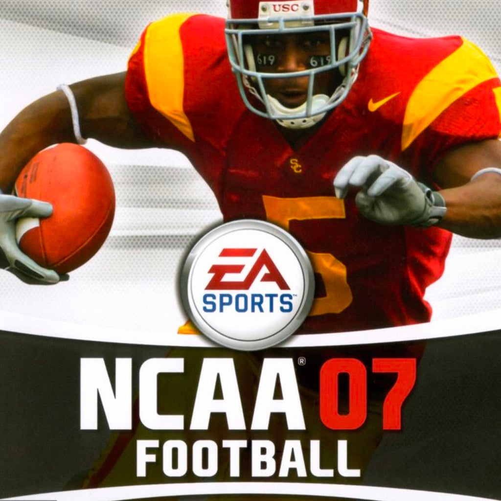

NCAA Football 07 Recomp — Dev Log #001: From Childhood Favorite to PC Recompilation
Orange Power Labs | Development Journal #001

Where It All Began
If you know me, you probably know that NCAA Football 14 is my favorite video game of all time.
But before NCAA 14, there was another game that held that title for a very long time: NCAA Football 07.
Growing up, NCAA Football 07 was one of those games I could play endlessly. Whether it was building a dynasty, recruiting players, or just enjoying the atmosphere of college football, there was something special about it.
Even as newer football games came along, NCAA 07 remained one of my favorites.
There's something about those older college football games that still holds up today. The gameplay, the dynasty experience, and the memories attached to them make them difficult to replace.
And now, nearly two decades after its original release, I'm hoping to give NCAA Football 07 a new chapter.
Discovering Xbox Recompilation
Recently, while researching ways to bring older sports games to modern PCs, I came across something that immediately caught my attention.
Developers have been exploring ways to take games originally built for older consoles and recompile their executable code into applications that can run natively on modern computers.
This process is known as static recompilation.
Unlike traditional emulation, where software recreates the behavior of the original console, static recompilation attempts to translate the game's original machine code into code that can be compiled for a different platform.
For this project, that means investigating whether the original Xbox version of NCAA Football 07 can eventually become a native Windows application.
The framework we're exploring is called xboxrecomp, an open-source project focused on original Xbox recompilation.
When I realized NCAA Football 07 might be a candidate for this process, I knew I wanted to investigate it.
The possibility of bringing one of my favorite childhood games to PC was too exciting to ignore.
Introducing the NCAA Football 07 Recomp Project
Today, I'm officially introducing the NCAA Football 07 Recomp project under Orange Power Labs.
Our immediate goal is straightforward:
Investigate, recompile, and eventually run the original Xbox version of NCAA Football 07 as a native Windows application.
Of course, accomplishing that is anything but straightforward.
Original Xbox games were developed for hardware and software environments very different from modern Windows computers.
Getting the original game code translated is only one part of the challenge. We'll also need to investigate how the game interacts with Xbox system functions, graphics, audio, memory, and other hardware-dependent features.
This isn't a simple matter of converting a file and clicking Play.
It's a long-term engineering project, and we're starting with the fundamentals.
We'll be using Visual Studio Code, AI-assisted development tools such as Codex and Claude Code, and the xboxrecomp framework to research the game's executable and work through the recompilation process.
Our development approach will prioritize following the framework's official documentation, understanding each step, and carefully verifying our results.
The Bigger Dream: Missouri High School Football
Getting NCAA Football 07 running on Windows would be an incredible accomplishment by itself.
But there's another reason I'm particularly excited about this project.
I eventually want to transform NCAA Football 07 into a Missouri High School Football game.
Imagine taking the foundation of a classic college football title and rebuilding it around Missouri high school football.
Real Missouri schools. Authentic team identities. Custom conferences and classifications. High school schedules. And eventually, a postseason system that reflects the structure of high school football.
That's the long-term vision.
Before we can seriously pursue those features, however, we need to understand the game's architecture and determine what is technically possible.
This project is also separate from our existing Missouri High School Football modification of NCAA Football 14 on PlayStation 3.
Although the two projects share a creative vision, they have completely different technical foundations.
The NCAA Football 07 project will focus on original Xbox recompilation and eventual native Windows development.
Building the Foundation
Our first development milestone focused on establishing a dedicated workspace and organizing the project for the research ahead.
We've created a separate development environment for NCAA Football 07 so that the recompilation work remains independent of our other Orange Power Labs projects.
The plan is to work methodically through the xboxrecomp development process, beginning with understanding the original game files and executable.
Before attempting to build an entire game, we need to answer some fundamental questions.
How is the original Xbox executable organized? What functions and system libraries does it depend on? How much of the game's code can be analyzed and translated? And what additional work will be required to make that code function on Windows?
Those questions will guide our early milestones.
At this introductory stage, we're establishing the foundation rather than claiming a working PC port.
What's Next?
Our next development log will take us inside the original Xbox version of NCAA Football 07.
We'll explore the game's file structure, examine its executable, and begin documenting what the xboxrecomp framework needs to understand before recompilation can proceed.
This is where the technical journey really begins.
There will undoubtedly be challenges, unexpected discoveries, and plenty of trial and error along the way.
But that's part of what makes this project exciting.
For me, this isn't just about bringing an old football game to modern hardware.
It's about revisiting a game that helped shape my love of college football gaming, learning the engineering behind it, and hopefully building something new from that foundation.
NCAA Football 07 was a huge part of my childhood. Now, nearly 20 years later, I'm excited to see what we can do with it.
Welcome to the NCAA Football 07 Recomp project.
#GoPokes
— Orange Power Labs